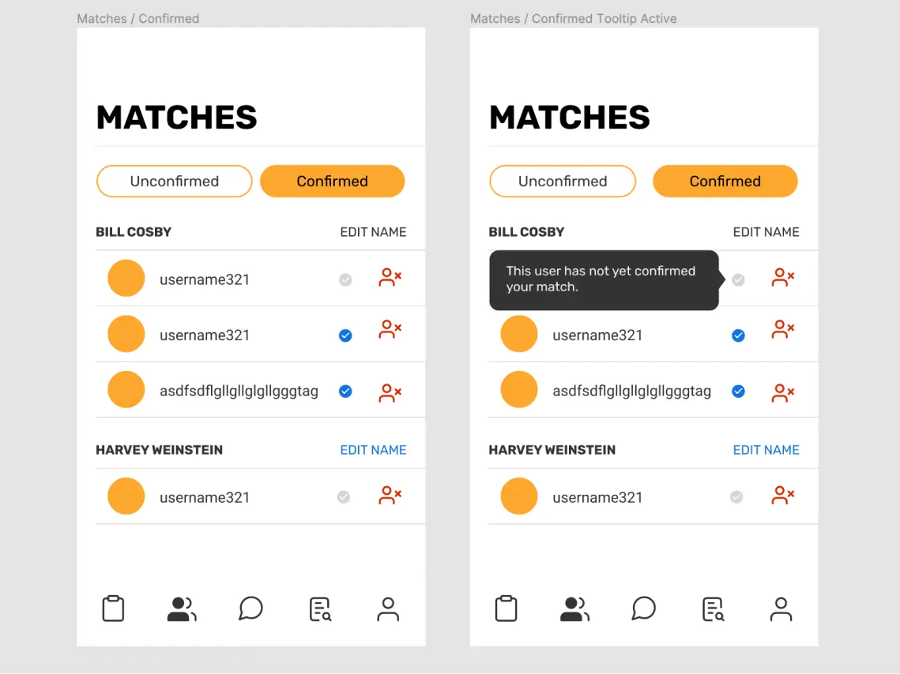
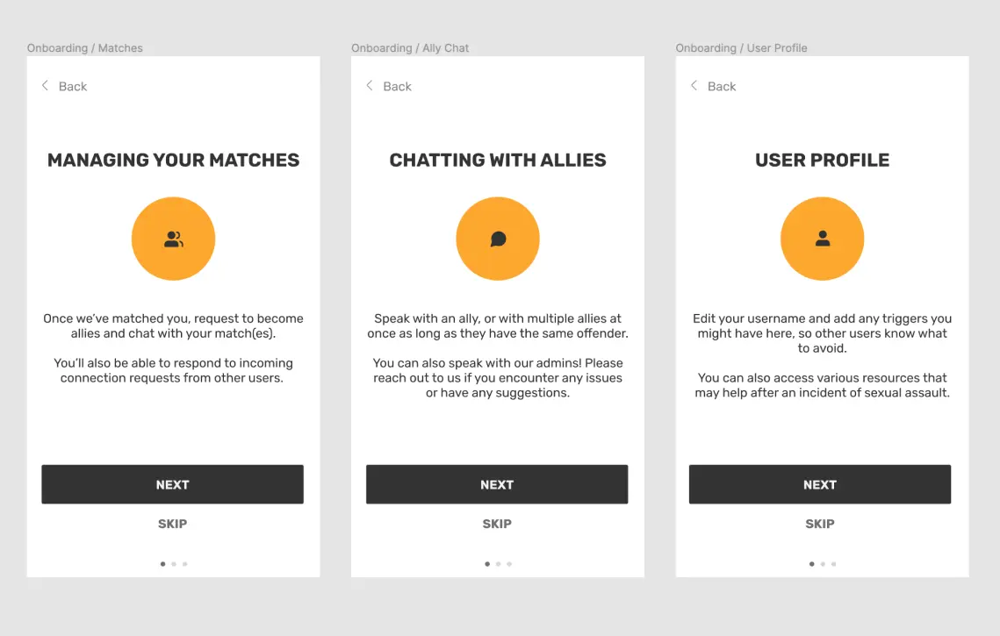
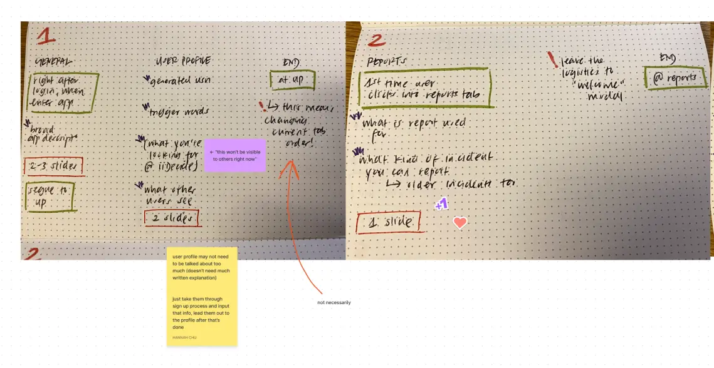
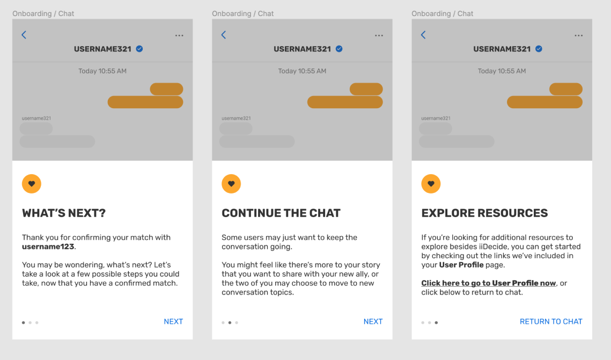
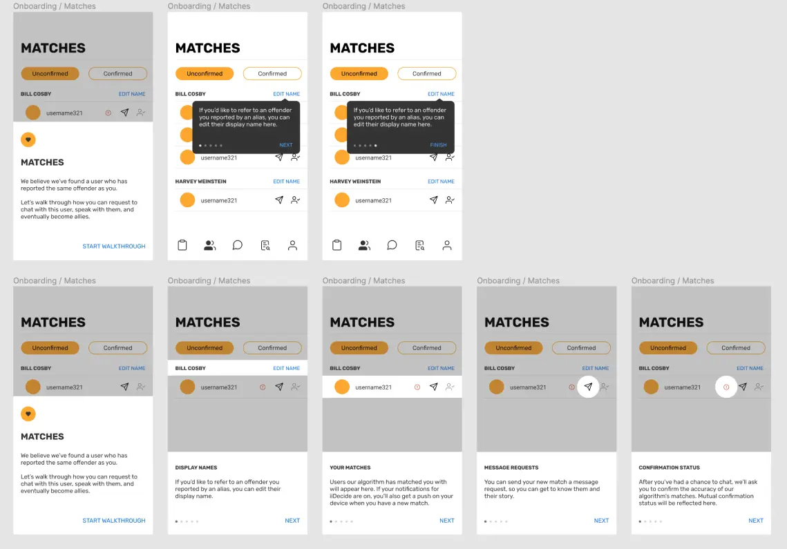
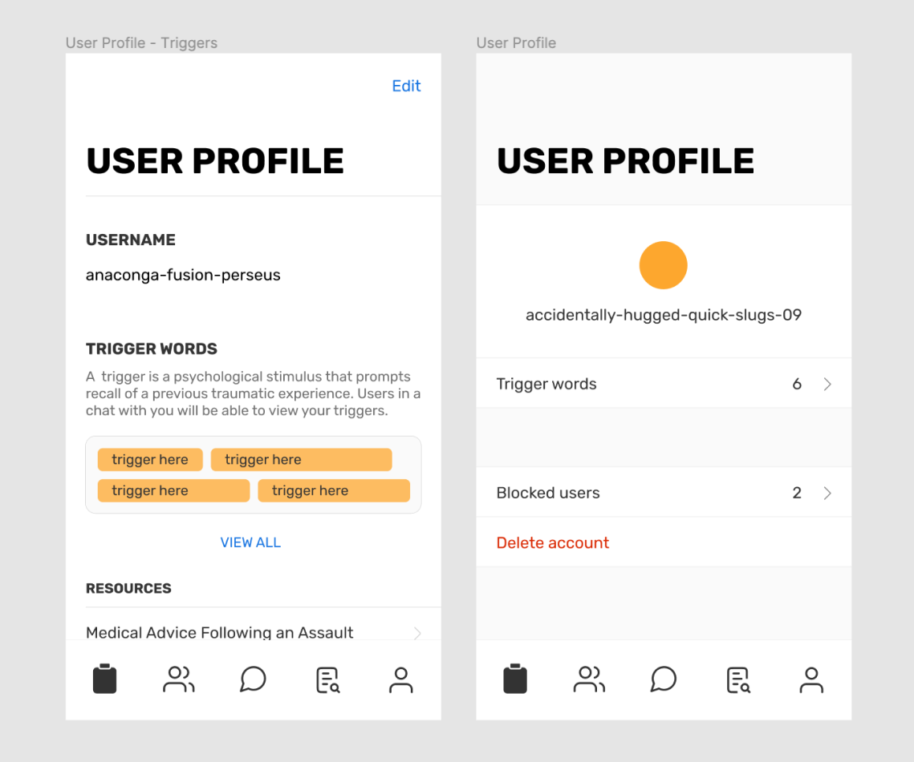

transforming iidecide's onboarding @ nova for good
overview
iiDecide is an app that anonymously connects survivors of sexual assault with other survivors who had the same perpetrator as them. A starting team of 2 (later, 5) designers and 5 engineers, a group of us at Nova, Tech for Good worked on an alpha version of the app from Oct. 2020 to Oct. 2021. My design lead and I conducted usability testing interviews in Nov. 2021, and the team has since been working on a new beta version of the app, making changes based on user feedback.
Below, you’ll read about my work in the winter of 2022 on one sub-feature of iiDecide: user onboarding.
problem
In our usability testing interviews, we had users do a narrated walk-through of our app. In multiple sessions, we encountered the same problem—users didn’t understand what they were supposed to do on the Matches screen. The basic function of Matches is to let users see a list of other users that our algorithm matched them with, and we packed it with a bunch of actions a user could take, like starting a chat with a match, deleting a match, and confirming a match’s accuracy.
We identified 2 main problems in our design: 1) The Matches feature itself was too busy and chaotic (and needed to be rehauled), and 2) we did a poor job onboarding our users.
I took charge of problem 2). What was the issue with our current user onboarding and how could I better guide users through iiDecide's features?
step 1: onboarding audit
First, I reviewed our notes from usability testing and audited our current onboarding designs. The problem seemed to be that our onboarding was barebones and ill-placed in the app’s flow. For users, it felt irrelevant and easy to skip when they saw it.
We had placed a few, high-level-explanation carousel slides before a user officially entered the app; at the point, they didn't even know what the features we were referring to looked like yet.
step 2: research & picking a new system
After surveying various models of onboarding in other apps online, I suggested to my team that we try “sequenced onboarding.” In other words, we wouldn’t just have a few carousel slides at the beginning of the flow; onboarding would be broken up into 4 or 5 separate sections that appeared at different checkpoints within the app.
This new model would allow us to better support the user by providing guides for features as they encountered them and saving the onboarding of features that were only relevant later in the user flow for, well, later.
With the help of my teammates, I worked out 5 distinct onboarding checkpoints, or sections: General/Login, User Profile, Reports, Matches, and Match Confirmation.
step 3: designing "cross-modal" ui
Throughout my sketching and wireframing process, I realized how different the onboarding needs of different features were. For instance, Reports only needed a high-level overview because it's a form; it was already designed to have guiding copy embedded in it and a logical flow to it. Matches, however, is a complex feature with actions that (as we found during usability testing) were unfamiliar to many people—it would require a detailed guide. I decided I would adapt the modality of each onboarding section to the needs of the feature in question.
My work on onboarding came at a time when we were reworking our UI style, so I was given the freedom to play around with the components and visual design. For User Profile onboarding, my teammate suggested I simply take the user through filling out their profile; for Reports and Match Confirmation (which required only higher-level onboarding), I revamped sheet modals from our existing design system; for Matches, I tried a few versions of a guided, step-by-step walkthrough.
conclusion
Since the time of writing, I’ve continued to iterate on my wireframes with help from my teammates. Two of them have also worked on redesigning Matches and rethinking its overall functionality, as well as how it fits into the broader user flow. Some of my work, then, will surely change again going forward.
In the meantime, I’m taking a slight break from working on onboarding to complete other post-usability testing tasks (as we prepare for beta testing!). Here’s a quick look at one of them, a redesign of iiDecide user profiles (on the left, see old design—on the right, see new):
back to homepage